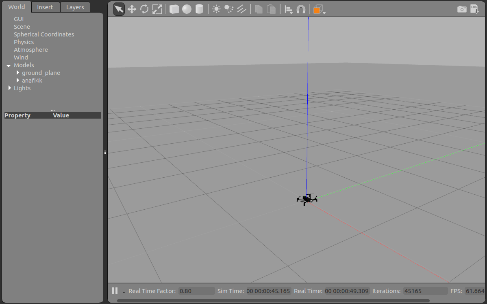

First step¶
Firmwared¶
For Linux distributions coming with systemd, Firmwared is installed as a systemd service. Therefore you just need to launch the service by entering the command:
$ sudo systemctl start firmwared.service
In case you reboot/start your computer, you need to restart the firmwared service.
As for the old Linux distribution (namely Debian Jessie), firmwared needs to be launched manually from a shell:
$ sudo firmwared
The execution of firmwared is blocking so do not close your shell.
Check that firmwared is alive¶
Enter the following command:
$ fdc ping
PONG
You should get a PONG in response. Otherwise, check the
Troubleshooting page.
Check your wifi interface name¶
Enter the following command:
$ iwconfig
and remember your host wifi interface name (usualy “wlan0” or “wlx************”). You will need it in the next step.
Simulated drones may use your host system wifi interface to communicate with the drone controller (e.g FreeFlight). For his own purpose, a simulated drone “steals” the host wifi interface. While the simulation is running, the wifi interface is only accessible from within the simulated firmware.
If you already use this interface for Internet access, you would be disconnected.
Launch your first simulation¶
Now that firmwared daemon is running, you just need to choose a .drone file
and start Parrot-Sphinx with it.
Several .drone files are provided along with the Parrot-Sphinx installation.
They are located in /opt/parrot-sphinx/usr/share/sphinx/drones/.
Let’s start Parrot-Sphinx with one of them. If your wifi interface name is “wlan0” just
enter the following command to launch Parrot-Sphinx:
$ sphinx /opt/parrot-sphinx/usr/share/sphinx/drones/anafi4k.drone
Alternatively, you can modify the .drone file and change the stolen interface name “wlan0” to the actual name of your wifi interface. You can also override the default interface name from the command line:
$ sphinx /opt/parrot-sphinx/usr/share/sphinx/drones/anafi4k.drone::stolen_interface=<your_interface_name>:eth0:192.168.42.1/24
As it is the first time Parrot-Sphinx is started with this .drone file, it may take several seconds to download the drone firmware from the external server. Once the firmware is loaded, the simulation starts and you should see something like below.
{kind=link}
You should now be able to establish a WiFi connection between your PC working as an access point and a smartphone running Freeflight (see How to connect to the simulated drone for more information).
To reset the simulation, on the Edit menu, go to Reset World, or hit Ctrl+R. To stop the simulation, hit Ctrl+C on the command line, or close the client.